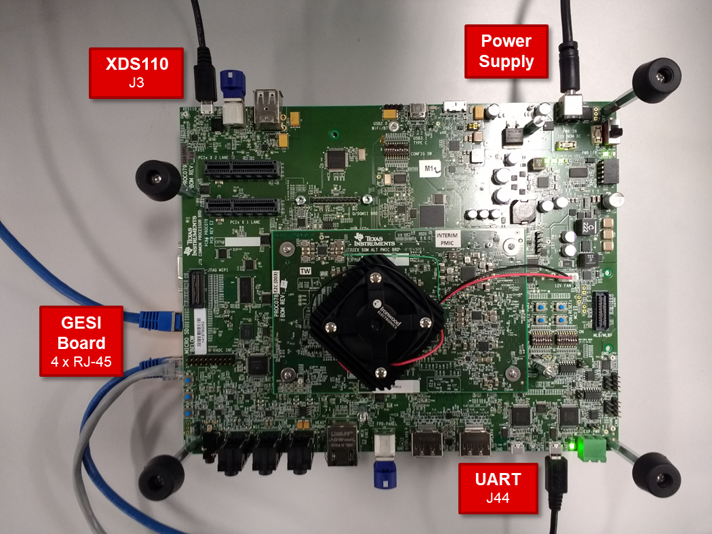
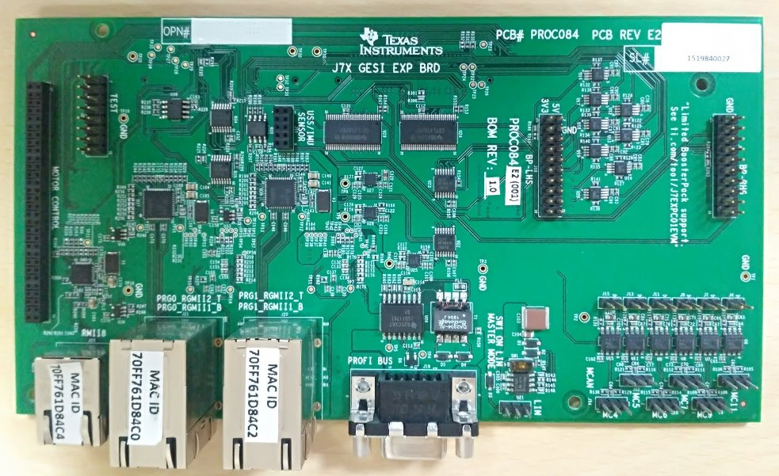
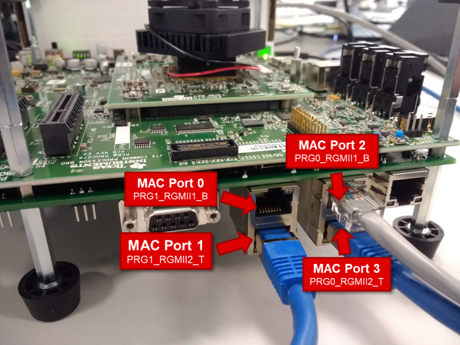
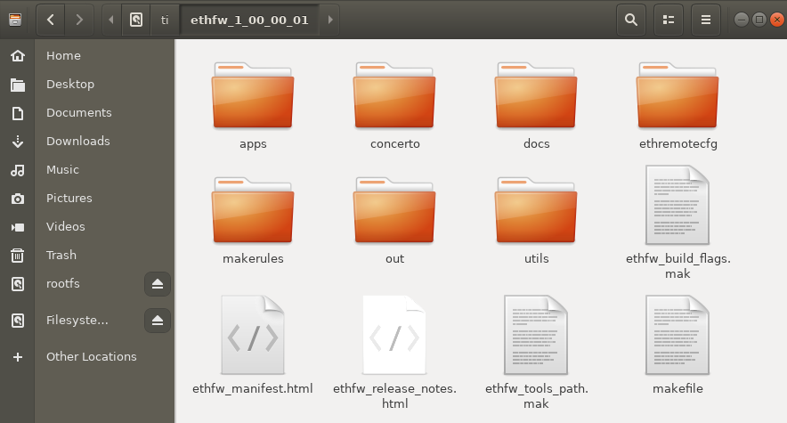
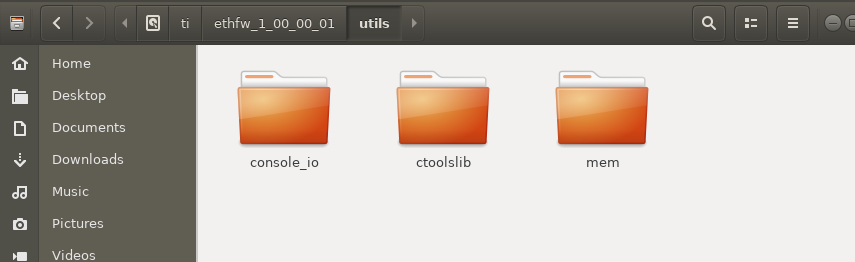
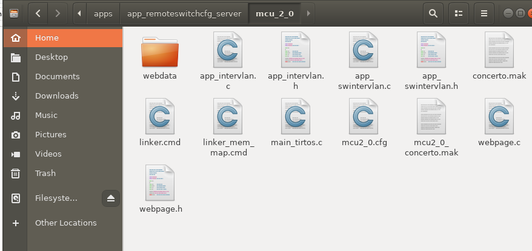
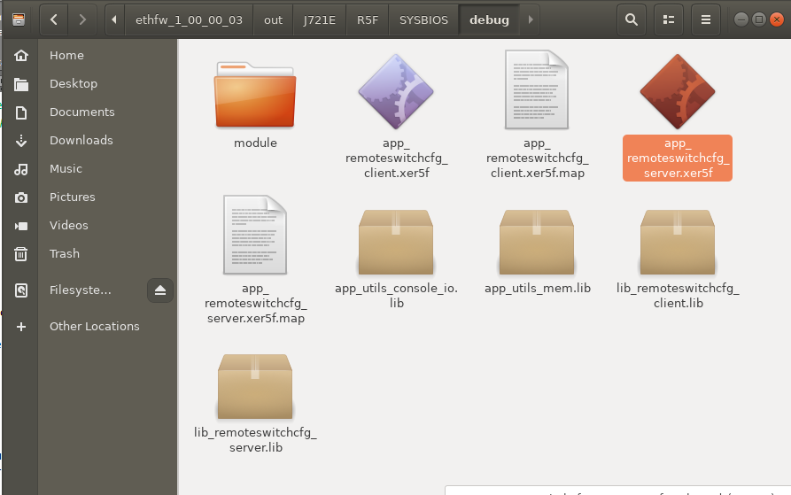

|
Ethernet Firmware
|
|
Ethernet Firmware
|
This user guide presents the list of features supported by the Ethernet Firmware (EthFw) and describes the steps required to build and run the EthFw demo applications.
For additional information about EthFw refer to EthFw Introduction.
The EthFw demos showcase the integration and usage of the Ethernet Firmware which provides a high-level interface for applications to configure and use the integrated Ethernet switch peripheral (CPSW9G).
The following sample applications are key to demonstrate the capabilities of the CPSW9G hardware as well as the EthFw stack.
| Demo | Comments |
|---|---|
| L2 Switching | Configures CPSW9G switch to enable switching between its external ports |
| L2/L3 address based classification | Illustrates traffic steering to A72 (Linux) and R5F (RTOS) based on Layer-2 Ethernet header. iperf tool and web servers are used to demonstrate traffic steering to/from PCs connected to the switch |
| Inter-VLAN Routing (SW) | Showcases inter-VLAN routing using lookup and forward operations being done in SW (R5F). It also showcases low-level lookup and forwarding on top of CPSW LLD |
| Inter-VLAN Routing (HW) | Illustrates hardware offload support for inter-VLAN routing, demonstrating the CPSW9G hardware capabilities to achieve line rate routing without additional impact on R5F CPU load |
This demo showcases switching capabilities of the J721E integrated Ethernet Switch (CPSW9G) for features like VLAN, Multicast, etc. It also demonstrates TI NDK (TCP/IP stack) integration into the EthFw, incorporating a sample HTTP server.
This demo illustrates hardware and software based inter-VLAN routing. The hardware inter-VLAN routing makes use of the CPSW9G hardware features which enable line-rate inter-VLAN routing without any additional CPU load on the EthFw core. The software inter-VLAN routing is implemented as a fall-back alternative.
The hardware inter-VLAN route demo exercises the CPSW ALE classifier feature, which is used per flow to characterize the route and configure the egress operation.
Available egress operations:
For further information, please refer to the Ethernet Firmware differentiating features demos demo application documentation.
| Feature | Comments |
|---|---|
| L2 switching | Support for configuration of the Ethernet Switch to enable L2 switching between external ports with VLAN, multi-cast |
| Inter-VLAN routing | Inter-VLAN routing configuration in hardware with software fall-back support |
| NDK integration | Integration of TCP/IP stack enabling TCP, UDP, HTTP apps |
| Remote configuration server | Firmware app hosting the IPC server to serve remote clients like Linux Virtual MAC driver |
| Resource management library | Resource management library for CPSW resource sharing across cores |
Dependencies can be categorized as follows:
Please note that the dependencies vary depending on the intended use (e.g. for integration vs running demo applications only).
EthFw is supported on the boards/EVM listed below


There are four RGMII PHYs in the J721E GESI board as show in the following image. They will be referred to as MAC Port 0, MAC Port 1, MAC Port 2 and MAC Port 3 throughout this document.

Please refer to the SDK Description for details about installation and getting started of J721E EVM.
Below listed dependencies are part of Processor SDK package.
Platform Development Kit (PDK) is a component within the Processor SDK RTOS which provides Chip Support Library (CSL), Low-Level Drivers (LLD), Boot, Diagnostics, etc.
The following sections list the PDK subcomponents that are required by the EthFw package.
Please refer to the Release Notes that came with this release for the compatible version of PDK/SDK.
Chip Support Library (CSL) implements peripheral register level and functional level APIs. CSL also provides peripheral base addresses, register offset, C macros to program peripheral registers.
EthFw uses CSL to determine peripheral addresses and program peripheral registers.
Unified DMA (UDMA) is an integral part of the Jacinto 7 devices and is in charge of moving data between peripherals and memory.
PDK includes an UDMA LLD which provides APIs that the CPSW LLD relies on to send and receive packets to the CPSW's host port.
This is CPSW driver module used to program the CPSW9G(Switch) IP. EthFw receives commands/configuration from application and uses CPSW LLD to configure CPSW9G.
The Network Developer's Kit (NDK) is a platform for development of network enabled applications on TI embedded processors.
NDK provides the TCP/IP stack which used in EthFw for running local TCP/IP applications and for running switch resident protocols like telnet and EAPoL, as shown in the Ethernet Switch Software Architecture diagram in the Ethernet Firmware Software Stack section.
EthFw software is an add-on package, and it's provided as an archive file (tarball).
tar -zxvf ethfw_xx_yy_zz_bb.tgz
mv ethfw_xx_yy_zz_bb ~/ti/.
Post installation of EthFw, the following directory would be created. Please note that this is an indicative snap-shot, modules could be added/modified.
The top-level EthFw makefile as well as the auxiliary makefiles for build flags (ethfw_build_flags.mak) and build paths (ethfw_tools_path.mak) can be found at the EthFw top-level directory.

The utils directory contains miscellaneous utilities required by the EthFw applications.

Source code of the EthFw demo applications is in the apps directory. For instance, below image shows the directory structure of the server application which implements L2 switch, inter-VLAN routing, etc.

Pre-compiled binaries are also provided as part of the EthFw release, which can be found in the out directory. For instance, below image shows the EthFw output directory structure with pre-compiled server and client binaries.

Refer to EthFw Demo Applications section for a full list of EthFw demo applications.
EthFw employs Concerto makefile-based build system. When building on a Windows based machine, tools such as Cygwin could be used.
The tool paths required by the build system are defined in the ethfw_tools_path.mak makefile. The default paths in ethfw_tools_path.mak are defined based on the assumption that the EthFw package has been installed inside the Processor SDK main directory.
Typically, the Processor SDK installation path is ~/ti in Linux-based systems. So, a typical EthFw installation would be at ~/ti/ethfw_xx_yy_zz_bb. In this case, no additional environment setup steps are required.
If either Processor SDK or EthFw have been installed at different locations that those mentioned in previous paragraph, the following variables can be passed to the make command:
make <target> PSDK_PATH=<Processor SDK installation path> ETHFW_PATH=<EthFw installation path>
Please refer to the Build and Clean sections for a list of recommended targets. Alternatively, run the following command to get the full list of valid targets:
make help
The make commands listed below require the environment setup according to Setup Environment section.
Build EthFw components as well as its dependencies, including PDK, NDK, etc.
make ethfw_all
Verbose build can be enabled by setting the SHOW_COMMANDS variable as shown below:
make ethfw_all SHOW_COMMANDS=1
On successful compilation, the output folder would be created at <ethfw_xx.yy.xx.bb>/out.
Note: If building the Ethernet Firmware for integration in Linux, please uncomment below in CPSW LLD's makefile located at <PDK_PATH>/packages/ti/drv/cpsw/cpsw_component.mk:
#CPSW_CFLAGS += -DSDK_6_2_CORE_SDK_IMAGE
This change is required to avoid board-level settings conflicts with Linux bootloader.
The make commands listed below require the environment setup according to Setup Environment section.
Clean EthFw components as well as its dependencies:
make ethfw_all_clean
Remove EthFw build output directory only.
make scrub
make ethfw_all PROFILE=debug
make ethfw_all PROFILE=release
The example applications use different memories and this could be changed and/or re-configured via linker command files.
<ethfw_xx_yy_zz_bb>/apps/app_<name>/<core>/linker_mem_map.cmd<ethfw_xx_yy_zz_bb>/apps/app_<name>/<core>/linker.cmdRefer to EthFw Demo Applications section for a full list of EthFw demo applications.
For detailed steps to load and run the demo application, please refer to the Demo Setup section.
Delete the complete ethfw_xx_yy_zz_bb folder.
| JIRA ID | Issue Summary | Workaround |
|---|---|---|
| PROC_BRDS-658 | MAC PORT 0 packet drop seen of Rx/TX - Packet drop is seen on MAC PORT0 (RGMII1) on 1Gbps mode on GESI board of J721E EVM alpha version. This port is labeled as PRG1_RGMII1_B in the GESI board connections figure in J721E EVM GESI Expansion Board section. This issue is not applicable to J721E EVM beta version | Reduce MAC port 0 speed to 100Mbps in J721E EVM alpha version |
| PROC_BRDS-671 | External 50MHz RMII clock from PHY is not connected by default to SoC's RMII_REF_CLOCK pin in GESI boards of J721E EVM alpha version This issue is not applicable to J721E EVM beta version | To get RMII_50MHZ_CLK, resistor R225 needs to be populated. Move R226 to R225 on GESI board to get this clock |
| PROC_BRDS-659 | QSGMII expansion board is causing instabilities in the MDIO bus in J721E EVM alpha version. After a few mins, MDIO register access fail. This issue is not applicable to J721E EVM beta version | Disable QSGMII PHY on J721E EVM alpha version |
| Flag | Description |
|---|---|
-g | Default behavior. Enables symbolic debugging. The generation of debug information do not impact optimizations. Therefore, generating debug information is enabled by default. |
--endian=little | Little Endian |
-mv=7R5 | Processor Architecture Cortex-R5 |
--abi=eabi | Application binary interface - ELF |
-eo=.obj | Output Object file extension |
--float_support=vfpv3d16 | VFP co-processor is enabled |
--preproc_with_compile | Continue compilation after using -pp<X> options |
-D=TARGET_BUILD=2 | Identifies the build profile as 'debug' |
-D_DEBUG_=1 | Identifies as debug build |
-D=SOC_J721E | Identifies the SoC type |
-D=J721E | Identifies the device type |
-D=R5F="R5F" | Identifies the core type as ARM R5F |
-D=ARCH_32 | Identifies the architecture as 32-bit |
-D=SYSBIOS | Identifies as TI RTOS operating system build |
| Flag | Description |
|---|---|
--endian=little | Little Endian |
-mv=7R5 | Processor Architecture Cortex-R5 |
--abi=eabi | Application binary interface - ELF |
-eo=.obj | Output Object file extension |
--float_support=vfpv3d16 | VFP co-processor is enabled |
--preproc_with_compile | Continue compilation after using -pp<X> options |
--opt_level=3 | Optimization level 3 |
--gen_opt_info=2 | Generate optimizer information file at level 2 |
-D=TARGET_BUILD=1 | Identifies the build profile as 'release' |
-DNDEBUG | Disable standard-C assertions |
-D=SOC_J721E | Identifies the SoC type |
-D=J721E | Identifies the device type |
-D=R5F="R5F" | Identifies the core type as ARM R5F |
-D=ARCH_32 | Identifies the architecture as 32-bit |
-D=SYSBIOS | Identifies as TI RTOS operating system build |
| Device Family | Variant | Known by other names |
|---|---|---|
| Jacinto 7 | J721E | - |
| Revision | Date | Author | Description |
|---|---|---|---|
| 0.1 | 01 Apr 2019 | Prasad J, Misael Lopez | Created for v.0.08.00 |
| 0.2 | 02 Apr 2019 | Prasad J | 0.8 Docs review meeting fixes |
| 0.3 | 12 Jun 2019 | Prasad J | Updates for EVM demo (.85 release) |
| 0.4 | 17 Jul 2019 | Misael Lopez | Updates for v.0.09.00 |
| 0.5 | 15 Oct 2019 | Misael Lopez, Santhana Bharathi | Updates for v.1.00.00 |
| 0.6 | 28 Jan 2020 | Misael Lopez | Updates for SDK 6.02.00 |
 1.8.13
1.8.13